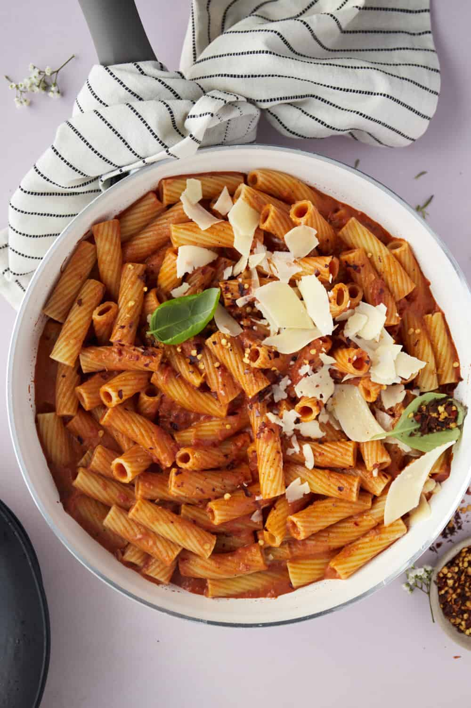

Spicy Pasta Recipe

Description
This is one of my favourite dish. It's inspired by Gigi Hadid's pasta dish. Pasta can be made in a lot of different ways,
and the way I do it is making in really spicy. The only downside to this dish is that it is kinda messy, so you need to organize your
kitchen smart. I like to add chicken breasts to this dish to have some more protein, but consider it optional.
Ingredients
- Pasta of your own choice
- Onion
- Garlic
- Tomato paste
- Cream
- Salt
- Pepper
- Chilli flakes
- Sugar
- Chilli
- Cheese
- optional: chicken
Steps
Chicken steps - Optional
If you don't want chicken in your pasta dish, you can skip this part.
- Cut your chicken into fine strips, put them in bowl, season them and massage it all up
- I like to season them with chilli, salt and pepper, but you can use whatever you want
- Fry the seasoned chickend and once done, remove it and put it in a bowl for later
Pasta steps
- Add pasta to boiling water
- Turn stove on medium heat, add pan and add 1 pat of butter on the pan
- Add cut onions and garlic stir so you don't burn them
- Once golden, add tomato paste and stir until the paste's raw smell disappears
- Add salt, pepper and chilli flakes, stir for few minutes
- Once you mixed it all up, add chilli powder and sugar and stir for about 2 minutes
- Add cream and pasta water and stir it all up so the flavour comes together
- Add your pasta and mix it
- Once done, serve it with chicken if you didn't skip the previous part
- Add some cheese for a final touch and enjoy this super spicy yet sweet pasta!
Back to home page